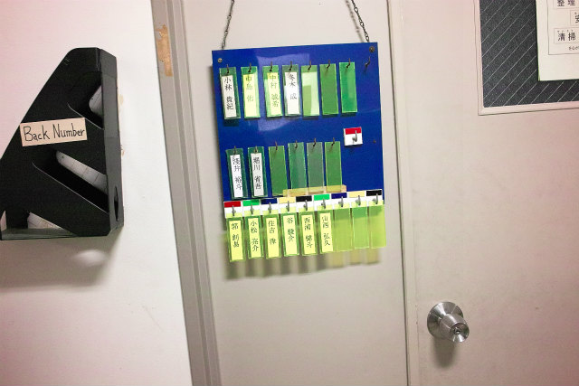

去年は4名でしたが、今年は学部4年生6名が計測研に配属しました。院試(残り140日くらいです)や就活と研究をうまくバランス取ってやっていきましょう。どれもコツコツと計画を立てて進めないと上手く行きません。
M1が寂しいですがキャラの濃さでカバー
まずは、村田先生から一言
B4Tくんから自己紹介
N甫くん自己紹介
Y西くん自己紹介
Kくん自己紹介
K松くん自己紹介
S吉くん自己紹介

新M1A井くん
Shogo「名簿、宴会部長」
M2K林くん
F木くん
名簿入力
写真撮影
| ・新4年生配属 (H26.04.01) | |||
去年は4名でしたが、今年は学部4年生6名が計測研に配属しました。院試(残り140日くらいです)や就活と研究をうまくバランス取ってやっていきましょう。どれもコツコツと計画を立てて進めないと上手く行きません。 |
|||
|

M1が寂しいですがキャラの濃さでカバー |
まずは、村田先生から一言 | ||
|
B4Tくんから自己紹介 |
N甫くん自己紹介 | ||
|
Y西くん自己紹介 |
Kくん自己紹介 | ||
|
K松くん自己紹介 |
S吉くん自己紹介 | ||
|
新M1A井くん |
Shogo「名簿、宴会部長」 | ||
|
M2K林くん |
F木くん | ||
|
名簿入力 |
写真撮影 | ||